Linux下配置frp内网穿透
注：需要访问内网资源，内网资源缺少公网ip被墙
要访问内网资源，内网资源缺少公网ip被墙，现在我们假设需要在内网主机上运行python，我们需要在公网访问到它，并考虑安全性。
原理图

准备工作
-
一台公网服务器，以及本地内网需要穿透到的主机
-
一个域名，本次配置中的web服务需要注册域名
-
下载好了最新版本的frp 发布，如：博主使用的是
v0.41.0👇(现阶段github被墙，科学上网或使用其他方式下载)
|
|
目录树👇
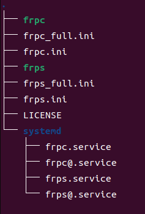
- 保证在公网服务器上经过设置的所有端口不被防火墙限制。
搭建流程
1.web服务基础版
如果需要搭建ssh服务等操作类似，Demo详情见官方文档，此处博主仅进行web服务搭建。
-
含有公网ip的服务器端
将刚刚下载的文件解压到~/frps下👇
1 2 3mkdir ~/frp tar zxvf frp_0.41.0_linux_amd64.tar.gz -C ~/frp cd ~/frp/frp_0.41.0_linux_amd64然后编辑文件**
frps.ini**，写入以下内容👇1 2 3 4 5[common] ;公网服务器与内网主机通信的端口 bind_port = 1234 ;访问公网服务器端口 vhost_http_port = 4231启动frps服务👇
1./frps -c ./frps.ini如显示frps started successfully即为成功，端口也会写明
-
内网主机端
将刚刚下载的文件解压到~/frps下👇
1 2 3mkdir ~/frp tar zxvf frp_0.41.0_linux_amd64.tar.gz -C ~/frp cd ~/frp/frp_0.41.0_linux_amd64然后编辑文件**
frpc.ini**，写入以下内容👇1 2 3 4 5 6 7 8 9 10 11[common] ;你的服务器ip server_addr = xx.xx.xx.xx ;公网服务器与主机通信的端口(和服务器端的vhost_http_port一致) server_port = 1234 [web] type = http ;你想要映射到的内网主机端口，常用的有22（ssh端口）、443等 local_port = 8888 ;你的服务器域名 custom_domains = xxxx.com启动frpc服务👇
1./frpc -c ./frpc.ini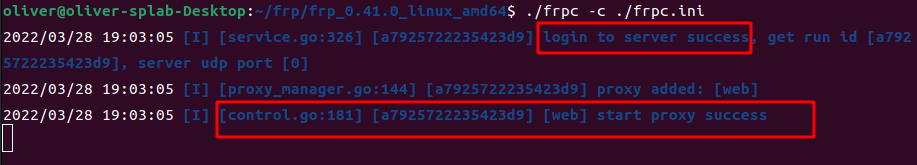
-
服务器端反应👇
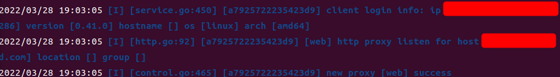
-
浏览器访问公网域名http://xxxx.com:vhost_http_port端口号
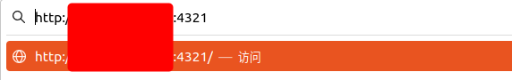
2.web服务Docker版（Jupyter lab款）
动机：使用docker提供服务，外网访问的服务在内网主机的docker内运行，相当于做了一层内网隔离，较为安全。
配置条件同基础版
一台公网服务器，以及本地内网需要穿透到的主机
一个域名，本次配置中的web服务需要注册域名
下载好了最新版本的frp 发布，如：博主使用的是
v0.41.0👇(现阶段github被墙，科学上网或使用其他方式下载)
1wget https://github.com/fatedier/frp/releases/download/v0.41.0/frp_0.41.0_linux_amd64.tar.gz
- 保证在公网服务器上经过设置的所有端口不被防火墙限制。
-
另：需要在内网主机安装docker环境
官网安装地址- 安装需要用来使用https利用仓库的包
1 2 3 4 5 6 7sudo apt-get update sudo apt-get install \ ca-certificates \ curl \ gnupg \ lsb-release- 设置稳定存储库
1 2 3echo \ "deb [arch=$(dpkg --print-architecture) signed-by=/usr/share/keyrings/docker-archive-keyring.gpg] https://download.docker.com/linux/ubuntu \ $(lsb_release -cs) stable" | sudo tee /etc/apt/sources.list.d/docker.list > /dev/null- 安装docker engine
1sudo apt-get install docker
含有公网ip的服务器端(与基础版一致)
将刚刚下载的文件解压到~/frps下👇
|
|
然后编辑文件**frps.ini**，写入以下内容👇
|
|
启动frps服务👇
|
|
如显示frps started successfully即为成功，端口也会写明
内网主机端
到dockerhub寻找合适的仓库
这里选择unbuntu作为我们的基础镜像
|
|
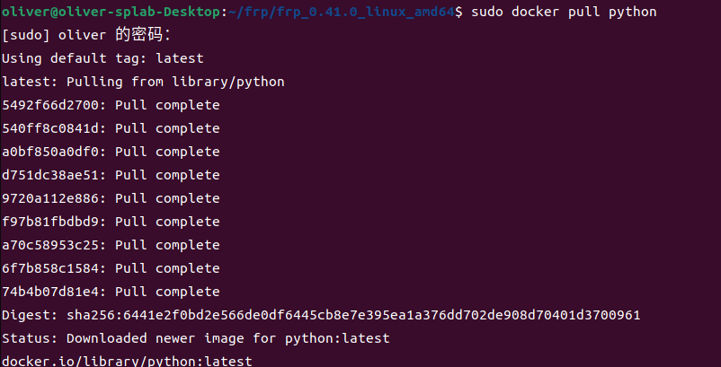
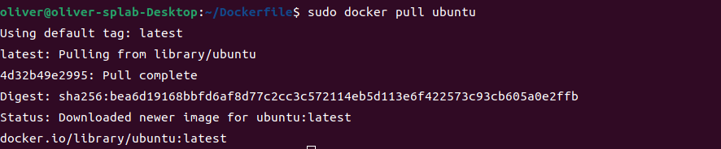
本文中docker 使用的一些命令
拉取镜像命令
sudo docker pull
镜像名通过Dockerfile构建镜像命令
sudo docker build -t
查看镜像命令
目标镜像名.sudo docker images
删除镜像命令
sudo docker image rm
镜像名进入运行中的docker 容器，退出时不关闭容器
sudo docker exec -it
容器名/bin/sh其中
bin/sh是指令运行器在镜像中的位置，可以使用以下命令查看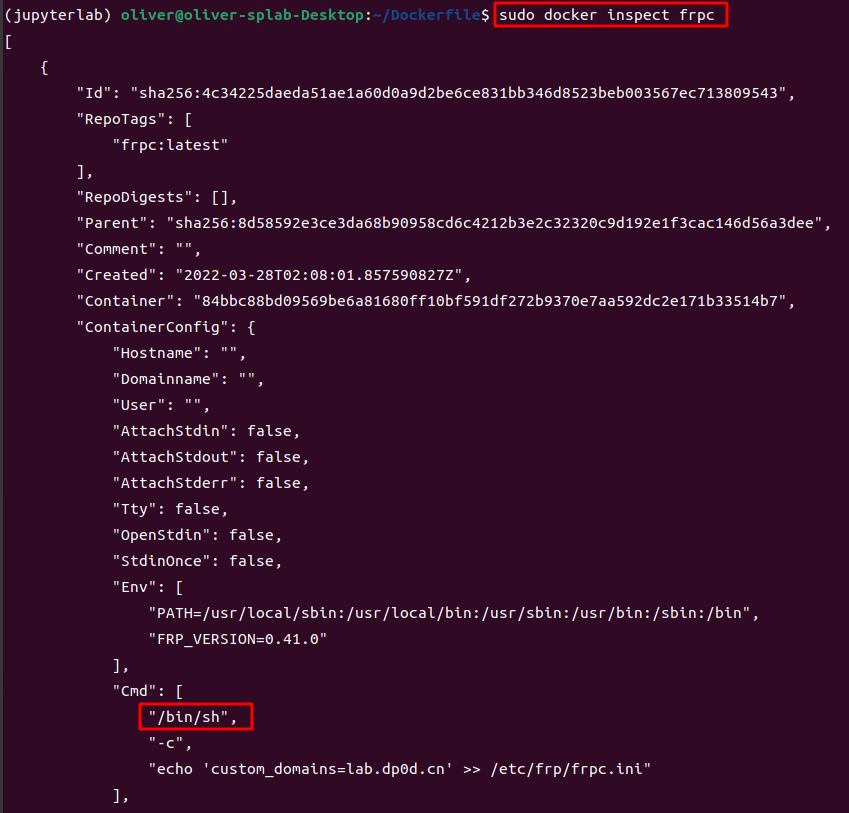
sudo docker inspect
容器名或者镜像名删除所有容器
sudo docker container prune
sudo docker system prune –volumes
sudo docker system prune –all
停用所有并删除所有，上面那条命令删除不了在运行的容器(需要多重复运行回车几次就干净了)
sudo docker stop $(sudo docker ps -q) & sudo docker rm $(sudo docker ps -aq)
使用该镜像创建容器，起名为jupyterlab，并将8888端口映射到内网主机
|
|
注:-d可以省略来调试无法启动的信息，正式使用在本次配置中需要加上。
查看是否在运行
|
|
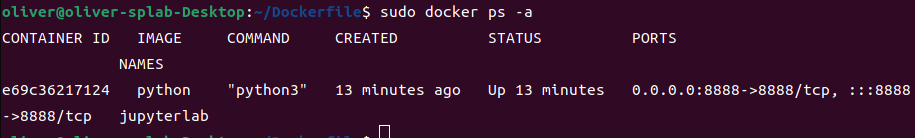
Up表示在正常运行
进入容器内
|
|
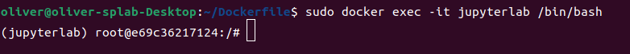
源更新
|
|
安装基础工具
|
|
安装python依赖
|
|
在容器内安装pyenv
|
|
重启shell
|
|
配置pyenv环境
|
|
使用pyenv安装python3.4.10并建立jupyterlab虚拟环境，这是一个很推荐使用的python环境管理软件，之前的博客中有介绍使用。(传送门)
查看可安装的python版本命令
pyenv install -l
|
|
生成jupyter lab的登陆口令
|
|
输入你想要的口令，如：2933194thg309rgbn13495y1tb1
启动jupyter lab, 让它在后台运行 ～
|
|
查看它的运行状态
|
|
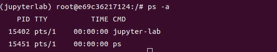
乖乖在后台呆着
然后退出但不关闭这个容器，使用快捷键Ctrl+Q+P
浏览器访问127.0.0.1:8888
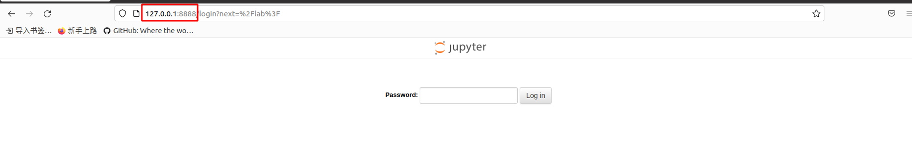
输入刚刚的密码2933194thg309rgbn13495y1tb1
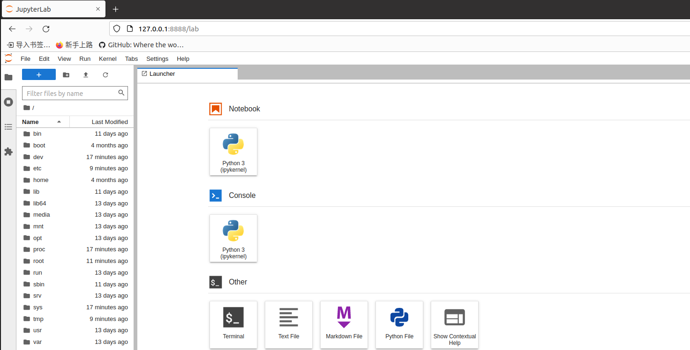
进来了，证明这时我们的jupyter还在容器后台乖乖呆着。，因为端口映射出来了，访问在主机8888端口相当于访问docker容器的8888端口。
继续配置我们的frpc
frpc.ini里的配置和基础版的一样
|
|
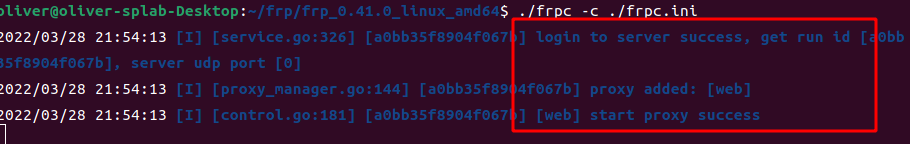
ok,服务起来了
在网址中输入我们的http://域名xxx.com:4321
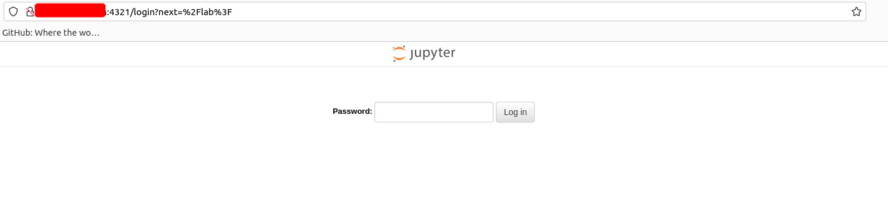
ok,访问到了
然后输入我们的jupyter口令2933194thg309rgbn13495y1tb1
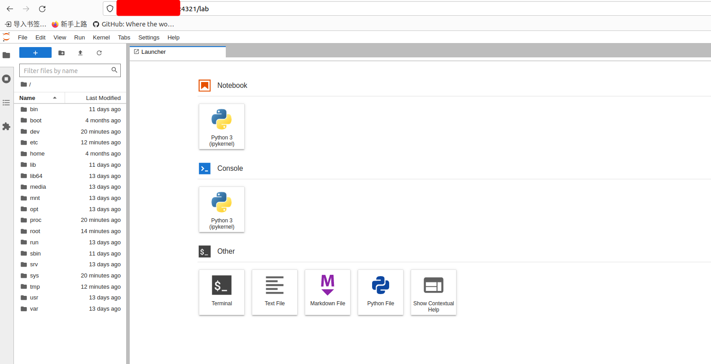
OK，通了
大功告成～